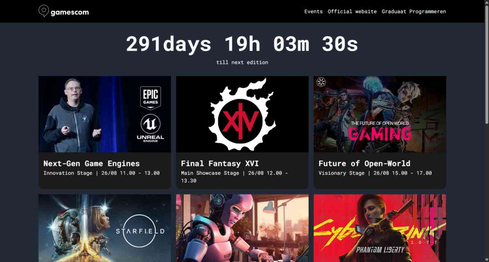

Gamescon 2026
Voor dit project ontwikkelde ik een simpele webpagina voor Gamescon 2026, waarbij de focus lag op het gebruik van Javascript om content vanuit een JSON-file in te laden.

De navigatie wordt gegenereerd op basis van een array met objecten. Elk menu-item bevat een naam en link. Externe links openen in een apart tabblad.
Er werd een live aftelklok geïmplementeerd die aftelt naar de start van Gamescom 2026. De klok wordt elke seconde geüpdatet met behulp van setInterval.
Wanneer een gebruiker op een event klikt, wordt een detailweergave geopend. Hierin wordt alle beschikbare informatie van het geselecteerde event getoond met zijn relevante social media links.